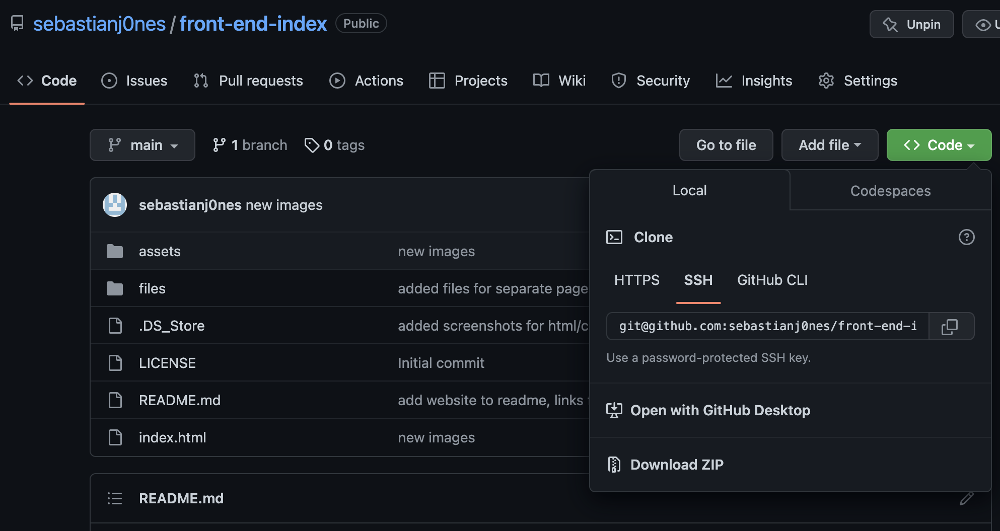

Git is the version control software, allowing savepoints to be made
Version control is helpful when developing code, especially in a team, to help prevent developers working on outdated code
Git can be used in the terminal
Cloning a repository is the first step in being able to use version control when developing.
